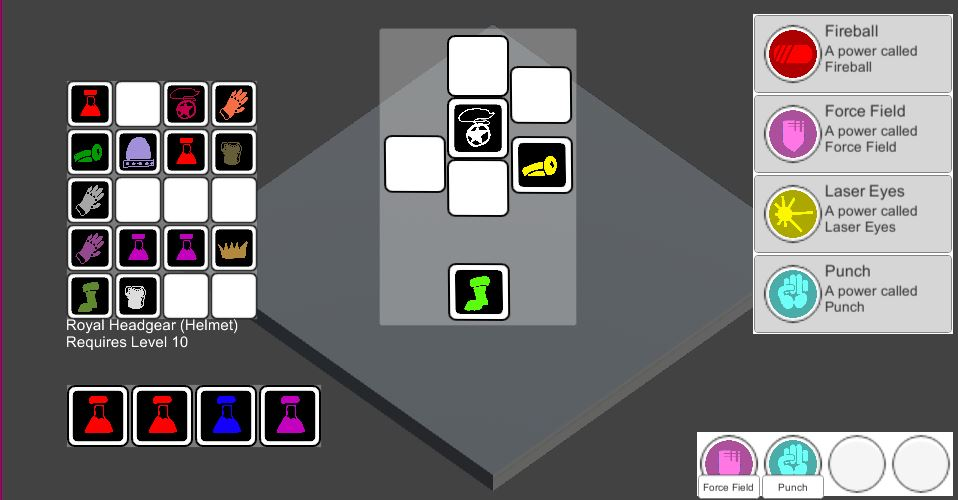
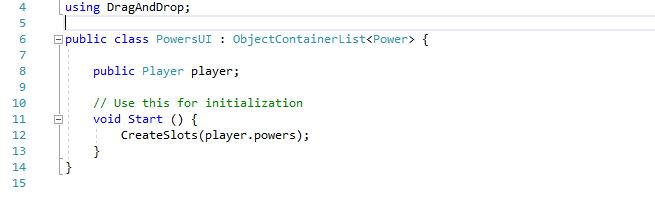

Drag and Drop Library
This project is the result of my quest for the perfect drag and drop system.
Drag and Drop UI's are up there with the invention of the mouse in terms of user-friendliness, and it seemed like a good idea to set up a generic drag and drop system for RPGRules that I could re-use.
My requirements were:
- Work with different types of objects (eg Powers, Upgrades, Items) in an agnostic manner.
- Be able to point the interface at any array or list of objects that a back-end object might have (powers in a powerset, player inventories, player's powers tray etc) and display and update it.
- Obey a good separation of back-end and front-end. Back-end objects like the Player, their progress, their inventories, know nothing about the UI.
I knew I'd achieved these goals when I made the following script:

To display a list of the player's powers in a drag and drop container, I just need to derive from one of my base classes (which simply deals wih a List of Objects) and call two lines of code in Start().
After that, the UI will display the objects using prefabs and re-order the list as objects are dragged around from within itself or other suitable containers.
The Example Scene
On the left is a 4 x 5 Inventory backpack, with an equip screen to the right with 7 slots arranged in a vaguely humanoid formation, and a 4 slot potions belt below.
You can use the left mouse to drag items between these three containers.
The potions belt can only receive potions. Anything else will snap back. The potion belt squares light up gold if a potion is dragged over them, and shrink and turn grey if anything else is,
to let the user know that you can't place those items there.
If you drag something over the Equip screen, all squares will open or contract, to help guide the user to the right slot for placing the item.
On the right is a powerset list with four powers listed in it.
Below that is a powers bar. You can use the right mouse to drag powers from the powerset into the powers bar. Note that this doesn't remove powers from the powers set, and the same item can be dropped in multiple slots here.
While playing with this interface, select the Player object in the inspector. You'll see that moving items around in the UI causes its internal arrays and lists to update correctly.
Drag and Drop Classes
The five main classes in the DragAndDrop namespace are located in the DragAndDropScripts folder. They are:
Draggable
An abstract base class for any UI object that represents a single item, such as a Power, Inventory Item or anything else that can be dragged between containers. A Draggable represents a UnityEngine.Object derived object of some kind.
This class does most of the heavy lifting.
You'll typically derive from this class and make one or more UI prefabs for it.
Your base class has to override the SetObject() function, which copies the data from the object that it represents into the UI elements of the prefab. Examples are CharmUI and PowerUI. Note that these classes are both used in multiple prefabs to give different representations of the same data.
In each prefab you specify mouseButton as 0 or 1 to enable the object to be dragged with either the left or right mouse. (This defaults to 0, but you could set it to 1 if your item is also a Button, like the PowerUI prefabs do).
Slot
A Slot represents a single place in the array or list of items being manipulated. Each Slot has a child Draggable, which may be inactive if the slot is empty.
You can use the base Slot class as it is, or derive your own class from it to display extra data in the slot, as I've done with PowerSetSlot. If you derive a class you can override UpdateSlot() and have the slot's state change when the object it's holding changes.
ObjectContainer
An abstract class that represents a collection of Slots. ObjectContainers allow you to specify rules as to how the collection behaves. What can be slotted in there, is the array read-only, and so on.
You specify a UI Prefab for the Slots (Slot Prefab) and one for for the Draggables that will sit inside them (Item Prefab). These are used in the MakeSlot function.
You can override any of the following functions:
- CanDrag(Draggable dragged) - return true or false if we're currently allowed to start dragging an item.
- CanDrop(Draggable dragged, Slot slot) - return true if we can drop the specified item into the specified slot. If we return false, it will snap back to where we dragged it from.
Here you can check that the item is the right type, for starters, eg a CharmListUI can only have CharmUI's dropped into it. You can also check things like player level, whether the item is the right type (eg helmets only in the head slot of the EquipScreen, or potions only in the belt). In a shop screen, you could check if the player has enough money, and so on.
- Drop() - called when an item is successfully dropped. The Draggables for each Slot have been updated at this point, this is where you'll want to write the contents of your Draggables back into the back end data.
Look at ObjectContainerArray and EquipScreen as examples.
- ThrowAway(Draggable dragged) - called when you drag an object out of this container into empty space. This is where you might spawn an in world prefab if the player dumps an item from their inventory.
- IsReadOnly() - override if dragging items out or in of this container does not change the underlying list, because its just a source for drag and drops, like the PowerSetUI.
ObjectContainerArray
An abstract class derived from ObjectContainer, that works with a C# array of Objects, automatically creating a slot for each one.
Your derived class doesn't need to call MakeSlot directly, but CreateSlots, which will automatically clone the Slot Prefab and Item Prefab for each element of the array.
ObjectContainerList
An abstract generic class derived from ObjectContainer, that works with a C# List of the generic type, automatically creating a slot for each one.
As above, but works with Lists instead of C# arrays.
Example Classes and Prefabs
The example project contains the following prefabs and components, which demonstrate various features of the Drag and Drop system.
CharmUI
A prefab for displaying a Charm ScriptableObject (ie a fantasy game item, like armour, equipment and potions), using a CharmUI component derived from Draggable. It changes the Image sprite and colour according to the Charm it's displaying.
SquareSlotBasic
A basic prefab that uses the core Slot component to display a slot with rounded corners. This is used in the Inventory item in the main scene.
It uses the OnSlot event to make a slot sound when anything is placed in it.
SquareSlotHighlight
A basic prefab that uses the core Slot component. This uses the events in its Slot component to change the Image, so the slot can visibly open up and turn gold when it can accept an object, and contract and darken when it can't.
CharmArrayUI
A component for displaying and managing a C# array of charms on a Player (ie the backpack or belt), derived from ObjectContainerArray.
This is used on the Inventory and Belt items in the scene.
Notice that both specify the Draggable prefab (CharmUI in both cases) and the Slot Prefab. The backpack can hold anything, so we use SquareSlotBasic for it. The belt is selective (only holds potions) so we use SquareSlotHighlight, to give the player some information when they drag items over it.
In both cases, the OnDragFailed event is hooked up to play a "whoops" noise when you try to drag an item into a slot where it won't fit.
The CharmArrayUI overides CanDrop to make sure that only certain types of objects can be dropped into a the container, screened by the charmType member. This is why you can only place Potions in the belt.
We've also overridden the OnDragBegin to allow us to change the text of a description field below the backpack.
The Unity components GridLayout and ContentSizeFitter are used to lay out all the child slots as they're created.
EquipScreen
A component on the Equipped object in the Canvas derived from ObjectContainer.
It acts as a front end for a series of Charm members on the Player, with each one represented by a custom Slot using the SquareSlotHighlight prefab.
The class has custom code in Start() to set up each Slot, based on a Slot that's been manually placed in the editor (unlike the ObjectContainerArray based cases where we instantiate the prefabs to make new slots).
This allows us to place the Slots in a humanoid outline.
We also use custom code in CanDrop to make sure that only items of the correct type can be dropped in each slot, and check for any level requirements that the item may have against the player's level.
PowerUINoLabel & PowerUILabel
A couple of prefabs that use the PowerUI component derived from Draggable.
Both display the icon for the power and colour it in. The label one also has a text label that shows the name of the power. Note that these use right mouse button dragging by setting mouseButton to 1 instead of 0.
RoundSlot
A basic prefab using the Slot component with a round image.
PowerSetSlot
This prefab uses a PowerSetSlot component derived from Slot for the read-only list of powers available in the power set.
This slot displays a name and description string in the slot, with just the icon being draggable from its slot. It does this by overriding the UpdateSlot() function.
PowerSetUI
A simple class derived from ObjectContainerArray that sets itself to read only via an override function. It displays the contents of a PowerSet, which contains an array of Power references.
PowersUI
PowersUI displays the players List of powers, by deriving from the ObjectContainerList generic class. It overrides absolutely nothing else, and demonstrates the power of this library by being only 4 lines of code long!